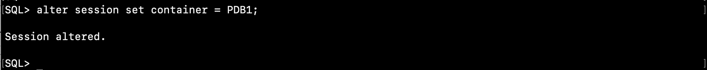
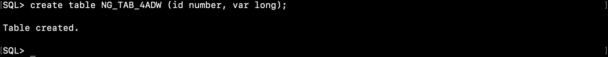

はじめに
既存Oracle DatabaseをAutonomous Databaseに移行するにはどうすれば良いでしょうか？ 従来からよく利用されるData Pumpを始め、Autonomous Databaseではいくつかの移行方法が用意されており、このチュートリアルでは移行編としてそれらの方法をご紹介しています。
Autonomous Database を使ってみよう（移行編）
- 301: 移行元となるデータベースを作成しよう（本章）
- 302: スキーマ・アドバイザを活用しよう
- 303: Data Pumpを利用してデータを移行しよう
- [304: ZDM/DMSを利用し、ダウンタイムを最小限に移行しよう（準備中）]
本章（301）では後続の章の準備作業として、移行元となる既存オンプレミスのOracle Databaseを想定しBaseDBインスタンスを作成します。
目次 :
所要時間 : 約150分 (BaseDBインスタンスの作成時間を含む)
1. 移行元となるBaseDBインスタンスの作成
まず、「Oracle Cloud で Oracle Database を使おう(BaseDB)」 を参考に、BaseDBインスタンスを作成してください。 TeraTermを起動しBaseDBインスタンスにSSHでアクセスするところから、PDB上のスキーマにアクセスするところまで一通り実施いただくとスムーズです。
以降では、BaseDBインスタンスが以下の値で作成されていることを前提として記載しています。（その他、DBシステム名やシェイプ等は基本的に任意です）
- ホスト名接頭辞 : dbcs01
- データベースのバージョン：12.2
- パスワード：WelCome123#123#
- PDBの名前：pdb1
2. 移行対象となるHRスキーマをインストール
次に作成したBaseDBインスタンス内に、移行対象となるHRスキーマを作成します。
（HRスキーマのインストール方法に関するマニュアルはこちら）を参照ください。
引き続きBaseDBインスタンスにて作業します。
-
Tera Termを利用してBaseDBインスタンスに接続しておきます。
- opc ユーザーからoracleユーザーにスイッチします。
sudo su - oracle - SQL*PlusでBaseDBインスタンスに接続します。
sqlplus / as sysdba - BaseDBインスタンスに構成されているPDBの一覧を確認します。
show pdbs
- PDBインスタンス名を指定してスイッチします。
（ここではデフォルトで作成されるPDBにアクセスしています。）alter session set container = PDB1 ;
- hr_main.sqlを実行し、サンプルスキーマ（HR）の作成します。（数分でHRスキーマが構成されます）
@?/demo/schema/human_resources/hr_main.sqlHRスキーマのパスワード等を聞かれますので、以下を参考にご入力ください。
- パスワード : WelCome123#123#
- デフォルト表領域 : USERS
- デフォルト一時表領域 : TEMP
- ログ : $ORACLE_HOME/demo/schema/log

- 特にエラーなく終了したら exit でSQL*Plus を終了してください。
exit
3. サンプルスキーマ（HR）への接続、スキーマの確認
次にHRスキーマに接続し、表や索引等のオブジェクトを確認しておきます。
- CDB経由ではなくPDBに対して直接アクセスするために、tnsnames.ora にPDBへの接続情報を追記します。
vi $ORACLE_HOME/network/admin/tnsnames.ora以下を追記します。（必要に応じて「Oracle Cloud で Oracle Database を使おう(BaseDB)」を参考にホスト名（HOST）、ポート番号（PORT）、サービス名（SERVICE_NAME） を変更ください）
PDB1 = (DESCRIPTION = (ADDRESS_LIST = (ADDRESS = (PROTOCOL = TCP)(HOST = dbcs01.subnet.vcn.oraclevcn.com)(PORT = 1521)) ) (CONNECT_DATA = (SERVICE_NAME = pdb1.subnet.vcn.oraclevcn.com) ) )
編集した内容を確認します。cat $ORACLE_HOME/network/admin/tnsnames.ora
- SQL*Plus でPDB上のHRスキーマに接続します。
sqlplus hr/WelCome123#123#@pdb1 - 以下のSQLを貼り付け、生成されたオブジェクトを確認します。
set lines 120 set pages 9999 col object_name for a30 select object_type, object_name from user_objects order by 1,2 ;
- ここで後続のハンズオンガイドで必要となる表を一つ作成しておきます。（ADWには格納できないLONG型の列を有する表を作成しておく）
create table NG_TAB_4ADW (id number, var long);
- 特に問題なければexitでSQL*Plusを終了してください。
exit
おわりに
以上で既存オンプレミスのOracle Databaseを想定したBaseDBインスタンスの作成、およびサンプルスキーマの作成が完了しました。後続の章ではこの環境から移行する方法についてご紹介したいと思います。
以上でこの章は終了です。次の章にお進みください。